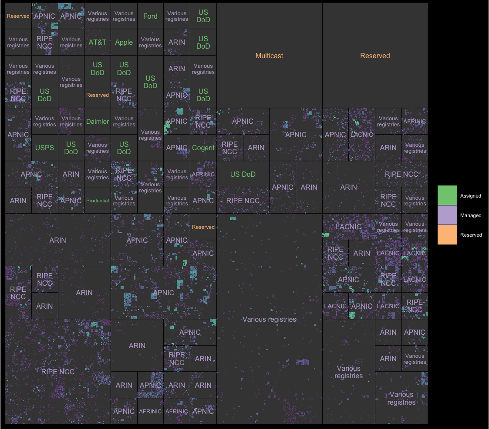

ggip is a {ggplot2} extension for visualizing IP addresses and networks stored in {ipaddress} vectors.
Here are some of the key features:
- IP data mapped to 2D plane by a unified coordinate system
- Compatible with existing ggplot2 layers
- Custom IP-specific layers for common use cases
- Full support for both IPv4 and IPv6 address spaces
Installation
You can install the development version from GitHub:
# install.packages("remotes") remotes::install_github("davidchall/ggip")
Example usage
The coord_ip() function configures the mapping of IP data to the 2D grid (addresses to points and networks to rectangles). This is fundamental to every ggip plot.
Here’s a quick example for some IPv4 data:
library(ggip) library(ggfittext) ggplot(iana_ipv4) + stat_summary_address(aes(ip = address), data = ip_data) + geom_rect( aes(xmin = network$xmin, xmax = network$xmax, ymin = network$ymin, ymax = network$ymax), alpha = 0.2, fill = "white" ) + geom_fit_text(aes( xmin = network$xmin, xmax = network$xmax, ymin = network$ymin, ymax = network$ymax, label = label, color = allocation ), reflow = TRUE) + scale_fill_viridis_c(trans = "log2", na.value = "black", guide = "none") + scale_color_brewer(name = NULL, palette = "Accent") + coord_ip(pixel_prefix = 20) + theme_ip_dark() #> Warning: Transformation introduced infinite values in discrete y-axis
